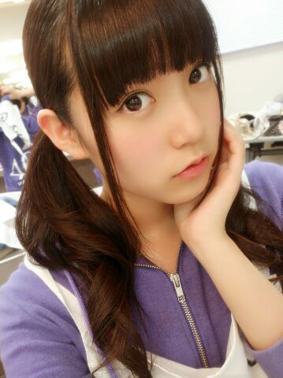
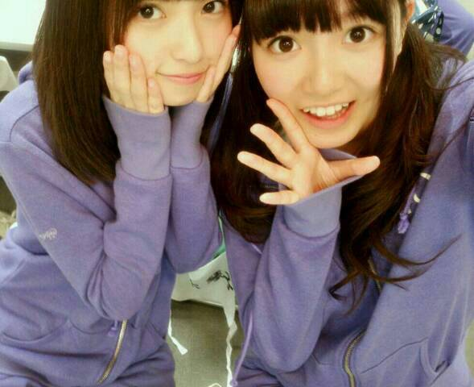
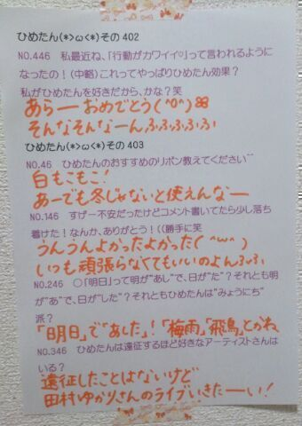

| 2014/06 10 Tue | ひめたん-OoO-その450 |
プリンシパル後半戦スタート( ^O^ )☆

だめだ写メが乃木ジャーしかない(笑)
日曜日の昼公演、月曜日、火曜日
アンサンブルとして
2幕に出演することができました！
投票してくださったみなさん
ありがとうございました(＊´ω`＊)
昨日は乃木坂MOVIEのトークショーにも
出演してきました
まいまい、愛未とひめたんの3人。
楽しかったなあー( ´ ▽ ` )ノ
来てくださったみなさんありがとうございました！
2年前の姿を見るのは恥ずかしいねー
なんてゆーかみんなかわいかった、うん
初心に帰ったような気持ちになりましたよー
さてみなさん
乃木のの聴いてくださったかな？
この度、わたくし
川後さんから引き継ぎ
乃木のの6代目MCに就任しました( ^O^ )☆
とゆーてもなんせ不慣れな者で
はじめのうちはぐだぐだーになっちゃって
聴けるものになるかわかんないけど
成長してるなーって
毎回毎回思ってもらえるような
ラジオにしていきたいです！
そう、私ね
声を使ったお仕事がしたいなって
ずっと思ってるの(＊^^＊ )
だから乃木ののにも
もっと出たいなーって思ってて
密かにラブコール送ってたんですよー
それが届いたみたいで嬉しい。
スタッフのみなさん
ほんとにありがとうございます！
頑張ります♪
来週の乃木ののは
さゆにゃん (井上小百合ちゃん)
あすかりん (齋藤飛鳥ちゃん)です
次回もお楽しみに(＾ω＾)ノ
そして 6/13発売のEX大衆
ひめたん載ってるよー
よかったらチェックしてみてねー♪

最後に、AKB選抜総選挙
生駒ちゃん14位！玲奈さん5位！
ふたりとも本当におめでとうございます( ´ ▽ ` )

 ひめたんは何かペット飼ったりした事ある?
ひめたんは何かペット飼ったりした事ある?
ハムスターを2匹(＾ω＾)
あとはあたしお世話してないけど
おうちにお魚さんいましたよー
かき氷で好きなシロップは
次のうちどれですか？
?いちご?メロン?カルピス?ひめたん
いちご一択......ん？
せいたんブログに載ってる写真の
ひめたん、せいたんと身長が変わらないけど、
ひめたん小っちゃくなったの(´；ω；`)？
えーっとねー
せいたんとずーさんはこの日
高いヒールを履いてらっしゃったよー
この前シュークリーム食べたら
中身ひめたんだった
へーすごーい(真顔)
ひめたんの日記の
コメント欄下２ケタに46を踏んだ方へ
手書きでコメ返するコーナー
＼ ひめたん46 ／

いつもたくさんのコメント
ありがとうございます
なんだか心配させちゃって申し訳ない(´・ω・｀)
結果はあいかわらずだけど
ちょっと楽しくなってきたよー♪
アンダーのMV完成したもの観たよー
なんてゆーか、はやくみんなも観て欲しい
強いていうなら、今までにない感じの......
うん伝わる自信ない(笑)
(＊´・ω・＊)
コメント(687)
2014/06/10 23:48